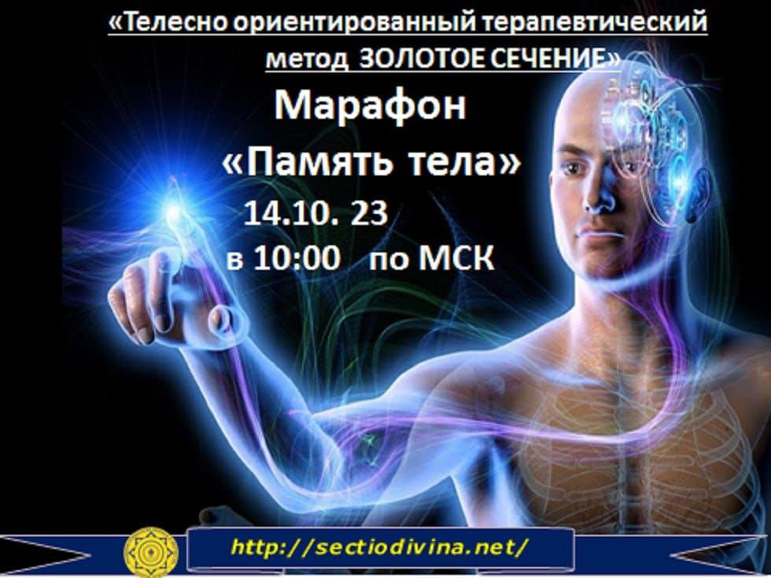

Приветствуем! На связи Академия Психологии, Бизнеса и Творчества Золотое Сечение!
Задумывались ли Вы когда - нибудь о том, что любое травмирующее событие, будьто физическая травма - Вы упали на лестнице, или психологическая- Вас предал близкий друг, оставляет неизгладимый след в Вашем теле?
Я сейчас говорю не о связи , которая может записаться на подкорку в нашем головном мозге, а, например, о том , что информация записывается в клетке печени или локтевом суставе.
В момент получения травмы, Вы впускаете в себя определённую эмоцию, страх или гнев, и этим фиксируете эту травму в своем теле, впуская избыточную энергию в себя.
Далее, начинается процесс борьбы с этой избыточной энергией, которая зачастую из-за недостаточного энерго-информационного потенциала застревает в теле, образуя энерго-информационную капсулу.
Ее еще называют энергетической кистой или энерго-информационным блоком. Далее в Вашем теле поселяются болезни или болевые синдромы, которые никак не удается диагностировать, а лечение не дает желаемого результата.
Причина, как раз, в той самой капсуле, которая может проникнуть в любую часть Вашего тела. Вы сможете научиться диагностировать свои "капсулы" и устранять их благодаря авторскому телесно-ориентированному терапевтическому методу ЗОЛОТОЕ СЕЧЕНИЕ.
Интересно? Тогда приходите на наш марафон - "Память Тела", который состоится онлайн 14.10.23 в 10:00 по МСК . Вход свободный. Зарегистрироваться